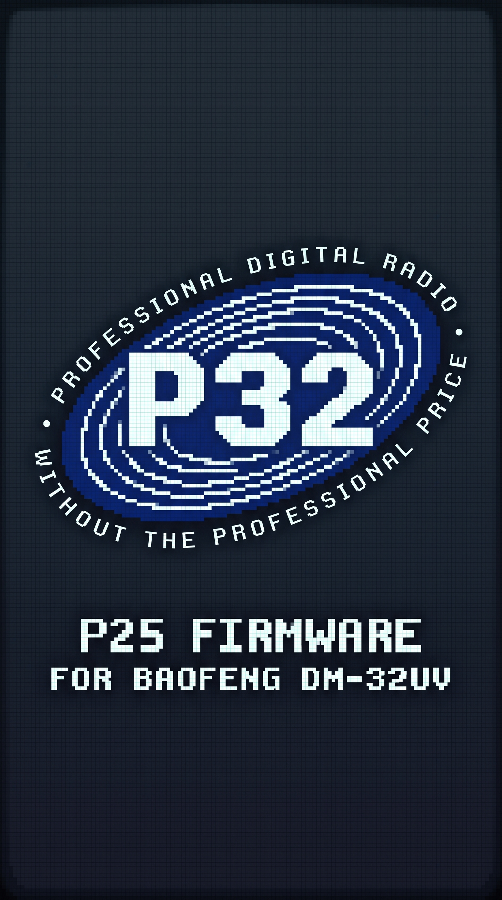

P25

IDLE
FM
82
ZONE-ANACH 12 / 32
446.0000MHz
ANALOG FM
TONE 88.5·12.5 kHz·2.0 W
ACTIVITYRSSI −74 dBm
SQUELCH CLOSED
Monitor off · Tone 88.5 Hz
PTT→TALKHOLD TO TRANSMIT
OK Menu* P25
LISTEN
P25
82
ZONE-ANACONVENTIONAL
446.0000MHz
P25 CONVENTIONAL
NAC 293·TG 1·UID 2
ACTIVITYRSSI −74 dBm
READY · NO ACTIVE CALL
Last: Unit 7 · TG 1 · 12:42
PTT→TG 12.0 W
OK Menu* FM
AFFIL
P25
82
SYS 123 · SITE 1TRUNKED
438.8000MHz
P25 TRUNKED · CC
WACN BEEF0·TG 1·UID 2
ACTIVITYRSSI −82 dBm
AFFILIATED · CC LOCKED
Site 1 · last grant 12:41 · TG 1
PTT→REQUESTCC 438.800
OK Menu* FM
RX
P25
82
INCOMING GROUP CALL
UNIT 7
P25 CLEAR · NAC 293
RSSI −74 dBm12:42
PTT ReplyBACK
TX
P25
82
TRANSMITTING
TG 1
00:00
P25 CLEAR · NAC 293
2.0 WRELEASE PTT TO LISTEN
HOLD PTTBACK cancels
IDLE
P25
82
QUICK1 / 6
PowerHigh
Squelch4
Backlight80%
ModeP25
ScanOff
P25 system›
EncoderOK editBACK
IDLE
P25
82
P25 SYSTEM1 / 7
ModeConventional
Frequency446.0000
NAC293
Talkgroup1
Unit ID2
Band planAuto
Save›
EncoderOK editBACK
IDLE
P25
82
TOOLS1 / 6
1P25 voice›
2P25 system›
3Zones›
4Channels›
5Scan›
6Settings›
1–6 openBACK
P32P25240×320
Mock controls outside the screen. The radio itself is keypad/encoder only.